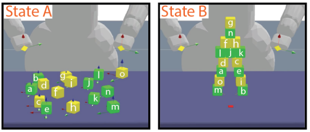

|
I'm current an M.Eng. student at MIT, where I work in the MIT Institute for Data, Systems, and Society (IDSS). I work with causal inference and statistics with Professor Caroline Uhler. I graduated from MIT with a S.B. in Computer Science and Electrical Engineering with a minor in Mathematics. Previously, I worked in the MIT Computational Cognitive Science Lab with Professor Josh Tenenbaum, the Laboratory for Information and Decision Systems (LIDS) with Professor Bob Berwick, and the Graybiel Lab with Professor Ann Graybiel. |
{kind=link}
|
|
I'm interested in [TODO]. |

|
Basil Saeed, Anastasiya Belyaeva, Yuhao Wang, Caroline Uhler Preprint, 2019 [TODO]: project blurb |
|  |
Ilker Yildirim*, Basil Saeed*, Grace Bennett-Pierre, Tobias Gerstenberg, Joshua Tenenbaum, Hyowon Gweon Proceedings of the 41st Annual Conference of the Cognitive Science Society (CogSci), 2019 Oral presentation [TODO]: project blurb |

|
Ilker Yildirim*, Tobias Gerstenberg*, Basil Saeed, Marc Toussaint, Josh Tenenbaum Proceedings of the 39th Annual Conference of the Cognitive Science Society (CogSci), 2017 [TODO]: project blurb |
* indicates equal contribution.
|
|